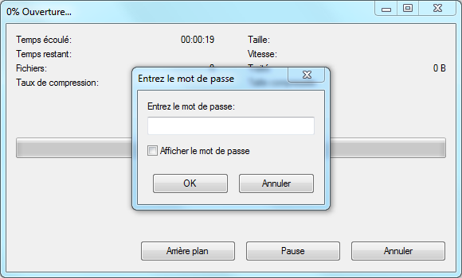

Le chiffrement, ou cryptage, consiste à rendre une donnée inexploitable à toute personne ne possédant pas la clé de (dé)chiffrement.
Avec 7-zip :
7-zip est avant tout un logiciel de création d'archives, ce qui veut dire qu'il permet de compresser les fichiers avant de les chiffrer. Créer des archives chiffrées avec 7-zip est donc idéal pour échanger des données sensibles ou stocker ces données.
Par contre, créer une archive 7-zip chiffrée implique d'avoir les données en clair sur son disque dur. De même, lors de la lecture du contenu d'une archive, 7-zip va l'extraire dans un dossier temporaire pour permettre aux logiciels concernés d'accéder aux données.
Chiffrer ses données grâce à 7-zip ne sécurise donc pas les données sur les ordinateurs qui vont créer ou ouvrir l'archive !
L'intérêt est, par exemple, de protéger les données pendant leur envoi par email. Si l'email est intercepté par une personne tierce, celle-ci ne pourra pas lire les données de l'archive sans son mot de passe. C'est également appréciable lorsqu'on sait que la plupart des grands fournisseurs de boites email ne suppriment jamais vraiment nos données et y ont accès.
Pour chiffrer des données sur lesquelles on est en train de travailler, il vaut mieux se tourner vers des solutions de chiffrement à la volée, comme TrueCrypt, GPG ou EncFS.
Pour créer une archive chiffrée, il faut procéder de la même manière que pour créer une archive normale avec 7-zip.
La plupart du temps, on sélectionne les fichiers/dossiers qu'on veut placer dans l'archive, on fait un clic droit, et on choisi 7-zip > Ajouter à l'archive....
On peut également, depuis la fenêtre de 7-zip File Manager, sélectionner les fichiers/dossiers et cliquer sur Ajouter.
Dans les deux cas, la boite de dialogue de création d'archive s'ouvre :
Voici les principaux réglages pour une archive classique :
Archive : le nom et l'emplacement où sera créée l'archiveFormat de fichier : je recommande de choisir 7z ; zip est moins performant mais peut servir pour être sûr que l'archive soit lisible par tout le mondeNiveau de compression : je recommande Ultra pour des données de type textuel, Normal pour des médias dans des formats déjà compressés (jpeg, mp3, ...), ou Aucune si la compression n'est pas nécessaire ou non désirée (très gros fichiers = compression lente)Pour chiffrer l'archive, il faut regarder dans la section Cryptage.
On a plusieurs réglages :
Afficher le mot de passe permet de ne pas masquer le mot de passe lors de sa saisie et supprime donc un des deux champs de saisie du mot de passeMéthode de cryptage : je recommande AES-256Crypter les noms de fichier : je recommande de l'activerIl convient de choisir un mot de passe long (> 10 caractères) pour assurer un bon chiffrement. De plus, il est plus malin d'échanger ce mot de passe avec le destinataire des données en utilisant un autre moyen de communication que celui qu'emprunteront les futures données chiffrées pour éviter l'interception de la clé et des données chiffrées en même temps (l'idéal étant de se mettre d'accord en personne).
Il suffit ensuite de valider et l'archive sera créée !
Ouvrir une archive chiffrée se fait de la même manière qu'une archive normale. La plupart du temps, il suffit de double cliquer dessus (depuis l'explorateur de fichiers ou depuis 7-zip File Manager).
Si Crypter les noms de fichier a été coché à la création de l'archive, le mot de passe est demandé :

Lorsque le mot de passe a été saisi, il est possible d'accéder au contenu de l'archive normalement.
Si Crypter les noms de fichier n'a pas été coché à la création de l'archive, l'archive s'ouvrira normalement et on pourra voir la liste des fichiers/dossiers qu'elle contient.
Le mot de passe sera demandé dès qu'on accédera à un des fichiers.
Premièrement, comme expliqué en introduction, 7-zip n'apporte pas de sécurité sur les ordinateurs amenés à créer ou ouvrir l'archive. L'intérêt est d'empêcher des tiers de pouvoir ouvrir l'archive.
Aucune sécurité n'est infaillible, et il faut comprendre comment une archive peut être ouverte sans la clé.
Une attaque par force brute (ou brute-force en anglais) consiste à essayer tous les mots de passe possibles jusqu'à trouver le bon.
Il existe des variantes, comme l'attaque par dictionnaire qui va essayer en priorité des mots de passes communs contenus dans une liste (des mots courants par exemple), dans le but de trouver plus rapidement le bon mot de passe.
Avec du matériel moderne, il est possible de tester très rapidement beaucoup de mots de passe pour un coût relativement faible. Pour ralentir ce genre d'attaques, il y a deux axes possibles :
La deuxième solution est bien plus efficace, car le nombre d'essais équivaut au nombre de caractères possibles puissance le nombre de caractères du mot de passe. Par exemple :
D'après la documentation de 7-zip, une organisation avec un budget d'un milliard de dollars et pouvant tester 10 milliards de mots de passe à la seconde (avec une puissance processeur qui double tous les deux ans) mettrait 4 ans à trouver un mot de passe de 13 caractères.
L'algorithme de chiffrement est la méthode qui permet de chiffrer les données. Comme on peut le voir lorsqu'on crée une archive chiffrée, 7-zip utilise l'algorithme AES-256.
La plupart des algorithmes de chiffrement sont publics et connus de tous, mais sont conçu de manière à ce qu'il ne soit pas possible de déchiffrer des données sans connaitre la clé. La sécurité repose donc sur la clé, et non sur la méthode de (dé)chiffrement.
Il est déjà arrivé que quelqu'un découvre une faille dans la conception d'un algorithme qui permette de déchiffrer les données sans le mot de passe ou d'accélérer la découverte de ce dernier. On dit alors que l'algorithme a été cassé.
L'AES date des années 2000, et n'a, pour l'heure, pas été cassé. Il est utilisé par beaucoup d'organisation et de systèmes divers, et il est peu probable que quelqu'un réussisse à le casser avant un moment. Et dans ce cas là, nos petites données échangées par email ne seraient pas la cible la plus critique...
David Sferruzza, 2013 Creative Commons 2.0 BY-SA